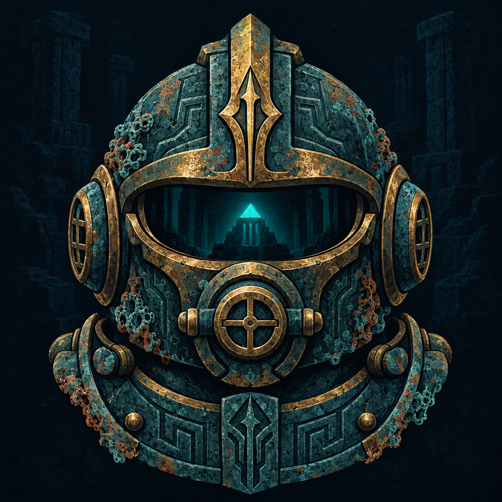

01
Coral Gate
Sunlit ruins where new explorers learn to read the currents.

AQUANAUTTHE LOST CITYBuilt in the depths of Aqua 🌊
Dive into Atlantis, recover ancient artifacts, earn XP, and prove how deep you can go.
Expedition log
These are transparent local game statistics, not blockchain activity.
Your journey begins below
Earn XP through dives, discoveries and missions. Surface safely to keep what you find.
Explore Atlantis
Sunlit ruins where new explorers learn to read the currents.
Collapsed sanctuaries guard keys, shrines and forgotten routes.
The city gives way to sheer rock and moving shadows.
Light fails. Oxygen burns. The oldest relics wait below.
The last chamber remembers every explorer who turned back.
What will you find?
A trade piece from the upper city.
Its needle points toward lost things.
Clouds before danger reaches you.
Warm despite three thousand years below.
The relic appears to be observing you.
Atlantis remembers the brave.
Atlantis map
The city descends through five distinct regions. Your rank opens the way.
Flagship expedition
Dive into the ruins. Collect treasure. Surface before your oxygen runs out.
The deeper you go, the greater the reward and the greater the risk.
Unexpected encounter
Field orders
Complete expeditions to earn permanent XP. Mission progress is stored locally.
Recovered collection
Equip one relic at a time. Its small expedition bonus applies to successfully surfaced XP.
Practice board
Your local score is placed among fictional demo challengers. No live or on-chain rankings are implied.
Explorer profile
Your expedition record on this device.
Community token
$NAUT is the planned community memecoin for the AQUANAUT expedition. The game remains playable in Demo Mode without a wallet or token.
Not launched yetAfter a verified launch, eligible rewards are based on indexed balance and holding time. Availability depends on the configured launch and reward rules.
XP, ranks and artifacts in this demo are game data stored on your device. They do not represent token balances or blockchain assets.
Expedition manual
Treasure Dive is a short risk-versus-reward expedition. A complete run takes less than two minutes.
Every dive starts with 100% oxygen and no unbanked loot.
Each checkpoint costs oxygen and adds XP. Deeper regions can reveal rarer artifacts.
Chests, shrines, currents and shadows can change the expedition. Some choices are safer than others.
Successfully surfaced XP and artifacts become permanent local progress. At zero oxygen, current loot is lost.
Complete missions, equip recovered relics and push your best depth toward the Throne of Atlantis.